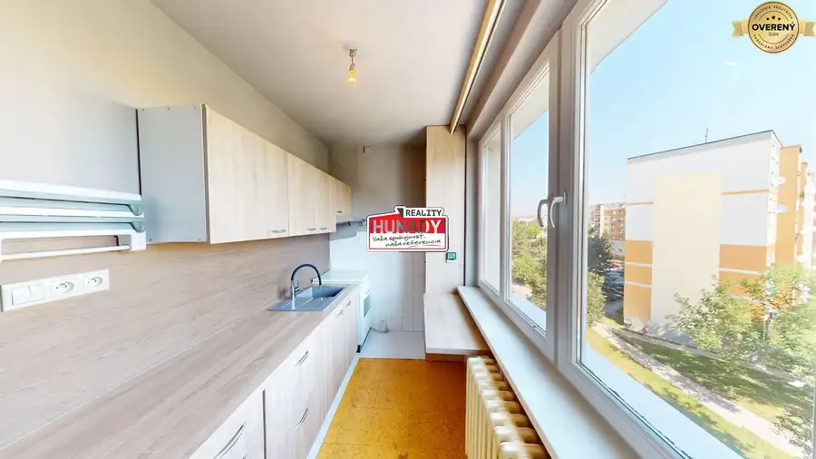
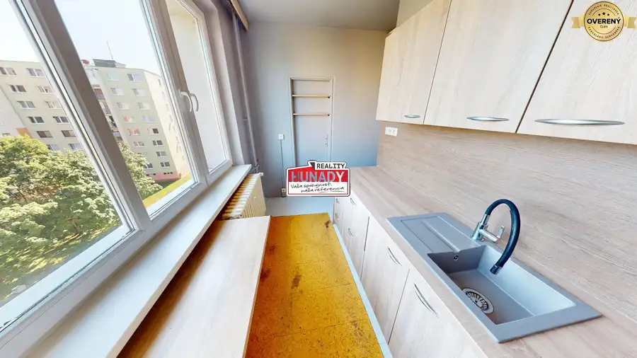
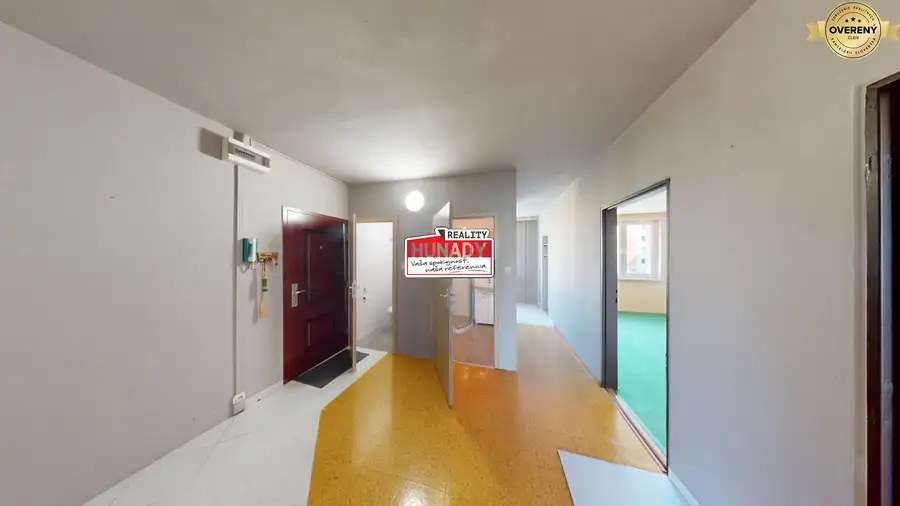
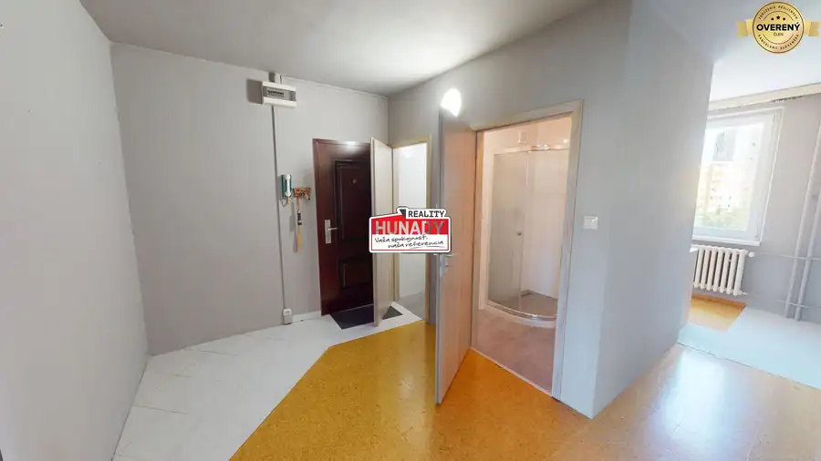
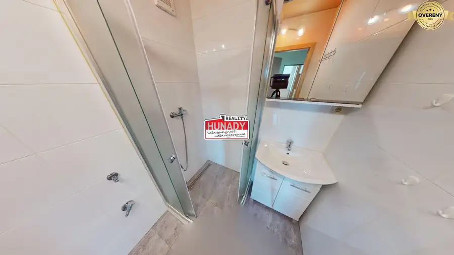
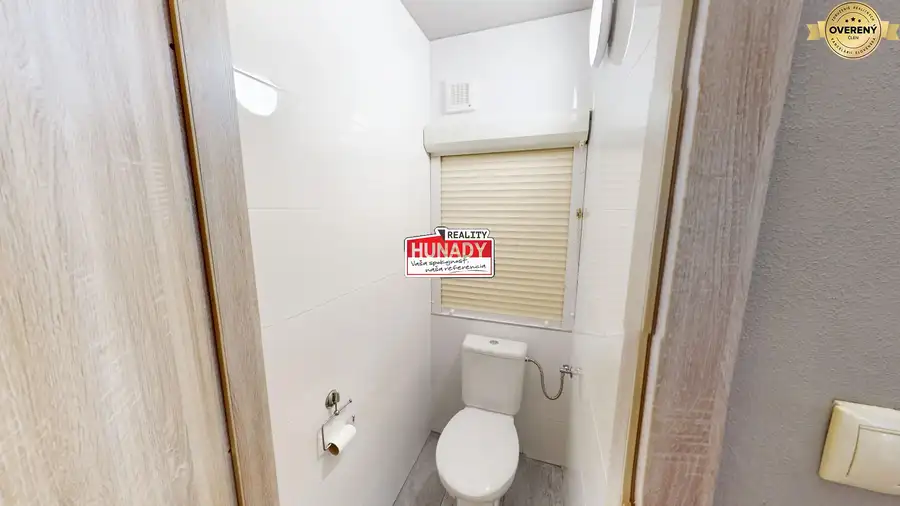
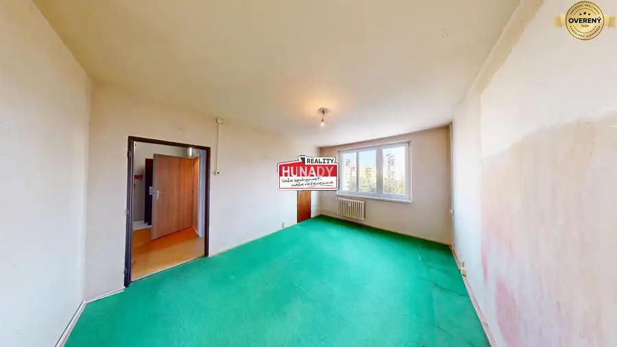
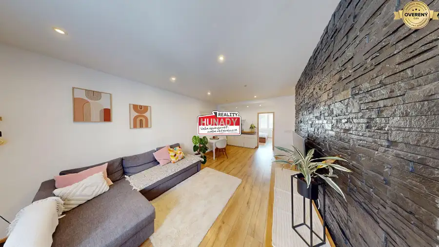
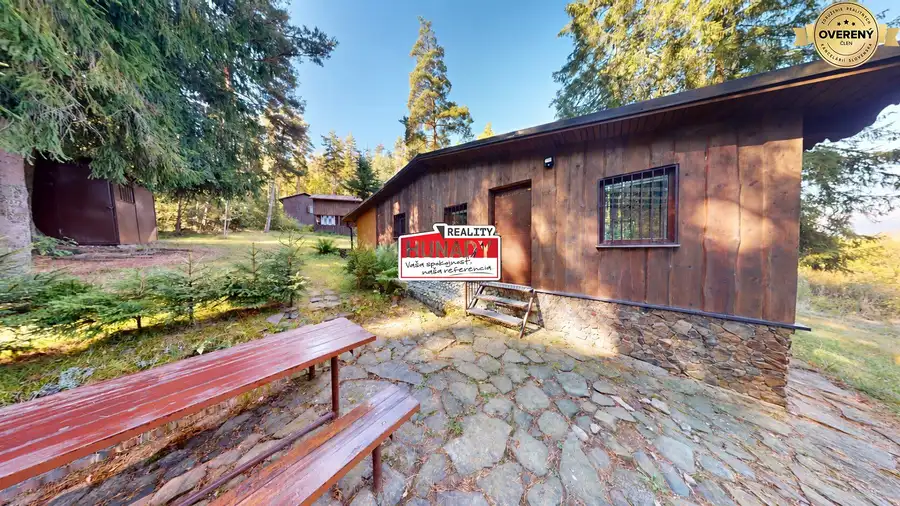
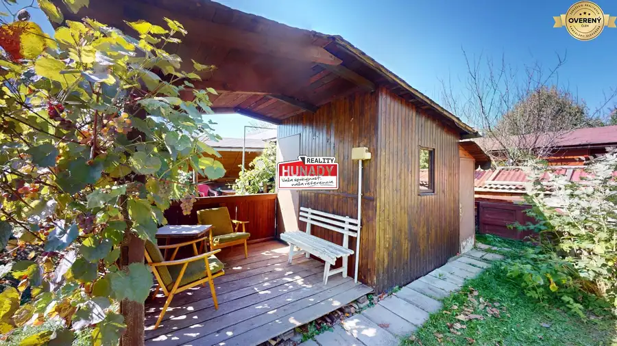

REZERVOVANÉ !!! (68 m²) 3i BYT S POTENCIÁLOM NA MIERI
Spišská Nová Ves







- Dispozícia3-izbový
- Plocha65 m²
- Poschodie6. z 8
- Stavčiastočne prerobený
- Vlastníctvoosobné
O nehnuteľnosti
HUŇADY REALITY
vám EXKLUZÍVNE ponúka na predaj 3-izbový byt na sídlisku Mier.
Nehnuteľnosť ponúka praktickú dispozíciu a vytvára priestor pre každého, kto hľadá byt s možnosťou úprav podľa vlastných potrieb a predstáv.
ZÁKLADNÉ INFORMÁCIE O BYTE:
• Výmera 68 m² – účelne využitý priestor pre pohodlné rodinné bývanie
• 5. poschodie v zateplenom bytovom dome s výťahom
• Kúpeľňa so sprchovacím kútom a samostatná toaleta
• Murované jadro
• Nová elektroinštalácia v kúpeľni a WC
• 3 samostatné izby a kuchyňa
• Pivnica (3 m²) situovaná v suteréne bytového domu
DISPOZÍCIA:
Byt pozostáva zo vstupnej chodby, samostatnej toalety, kúpeľne, kuchyne a 3 samostatných nepriechodných izieb. Izby sú svetlé a dispozične účelne usporiadané.
VIRTUÁLNA PREHLIADKA:
https://my.matterport.com/show/?m=9fP4psv2oVT
LOKALITA A VYBAVENOSŤ:
Sídlisko Mier ponúka dobrú dostupnosť k bežnej občianskej vybavenosti. V pešej vzdialenosti od domu sa nachádzajú detské jasle, materská a základná škola, obchody s potravinami, služby aj zastávky MHD. Poloha bytového domu zároveň zabezpečuje rýchle spojenie s centrom mesta.
Ak vás táto ponuka zaujala a hľadáte byt, ktorý si prispôsobíte podľa seba, neváhajte nás kontaktovať na telefónnom čísle a dohodnúť si osobnú obhliadku.
Fotografie sú autorským dielom a majetkom realitnej kancelárie HUŇADY REALITY. V cene je zahrnuté právne poradenstvo, príprava rezervačných a kúpnych zmlúv, uhradenie správneho poplatku za vklad do katastra a súčinnosť advokátskej kancelárie. Samozrejmosťou je aj pomoc pri vybavení hypotekárneho financovania.
Parametre
- Celková rozloha
- 68 m²
- Úžitková plocha
- 65 m²
- Poschodie
- 6/vyššie poschodie
- Počet poschodí
- 8
- Počet izieb
- 3
- Vlastníctvo
- osobné
- Stav
- čiastočne prerobený
- Status
- aktívne
- Odvoz odpadu
- áno - separovaný
- Plyn
- áno
- Internet
- optika
- Kúpeľňa
- sprchovací kút
- Vykurovanie
- spoločné
- Balkón
- nie
- Lódžia
- nie
- Pivnica
- áno
- Výťah
- áno
- Parkovanie
- verejné
- Postavené z
- panel
- Zariadenie
- nezariadený
- Zateplený objekt
- áno
- Energetický certifikát
- nie
- Okná
- plastové
- Orientácia
- sever/juh
- Dátum zverejnenia
- 2026-08-12
Kde to je
Mohlo by Vás zaujímať

BytNové 135 000 €(56 m²) 2i BYT V CENTRE ZARIADENÝ + 2 PIVNICE Spišská Nová Ves 2-izbový50 m²1. podlažie
Chaty a chalupyNové 99 999 €(50 m²) CHATA V OBJATÍ PRÍRODY V GÁNOVCIACH Gánovce 2-izbový50 m²
ZáhradyNové 37 999 €NOVINKA !!! (305 m²) ZÁHRADKA ZA TESCOM Spišská Nová Ves 305 m²